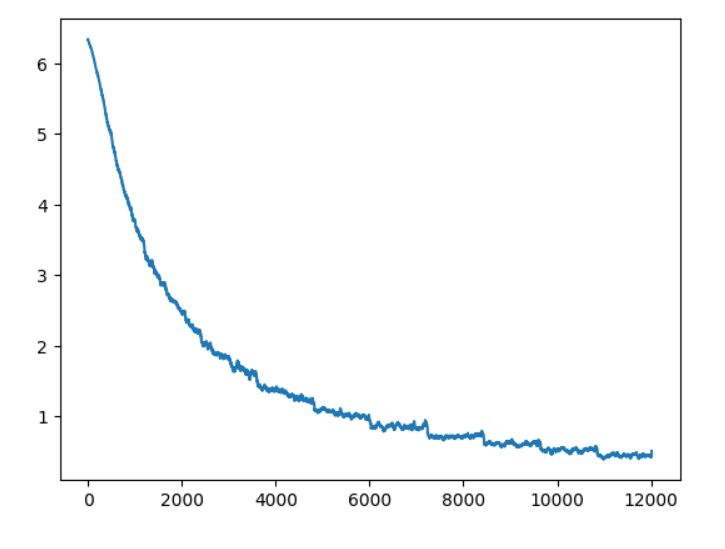

For our final project, we decided to participate in the biannual Bird Classification Competition on Kaggle. The goal of this competition is to classify the name of each bird accordingly to the image with the highest classification accuracy possible. For our work, we used Juypter and pytorch as the framework. With its extensive library, we were able to perform the training and produce our prediction. The neural network we used for the classification was the ResNet neural network architecture specifically, we used ResNet18 and Resnet152.
For our project, we used the Jupyter notebook to run the code and a rented GPU from vast.ai to train our model. We used the python library PyTorch as the framework to develop our neural network for the competition.
import numpy as np
import matplotlib.pyplot as plt
import os
import torch
import torchvision
import torchvision.transforms as transforms
import torch.nn as nn
import torch.nn.functional as F
import torch.optim as optim
device = torch.device("cuda:0" if torch.cuda.is_available() else "cpu")
The GPU used in the training was a GTX 4090.
For our dataset, we used the provided data set provided by Kaggle. The dataset consists of 10000 images of various birds and their respective name. In our workspace, we used a series of command lines to unpack our uploaded kaggle.json file to generate the dataset.
Import Kaggle Dataset
! pip install -q kaggle
! mkdir ~/.kaggle
! cp kaggle.json ~/.kaggle/
! chmod 600 ~/.kaggle/kaggle.json
! kaggle competitions download -c birds23wi
! mkdir 'checkpoints'
# Create checkpoints folder to save models
checkpoints = '/workspace/checkpoints'
The notebook we created to train was adapted from the class tutorial code. With the code used, we fine-tuned and calibrated it to what felt appropriate to get the best result.
The model starts by loading the data for training, which is done with the existing code from the class tutorial. We wanted to have a baseline prediction, which we determine that keeping the values from the tutorial would be the best approach.
# Method to load datasets
def get_bird_data(augmentation=0):
transform_train = transforms.Compose([
transforms.Resize(128),
transforms.RandomCrop(128, padding=8, padding_mode='edge'), # Take 128x128 crops from padded images
transforms.RandomHorizontalFlip(), # 50% of time flip image along y-axis
transforms.ToTensor(),
])
transform_test = transforms.Compose([
transforms.Resize(128),
transforms.ToTensor(),
])
trainset = torchvision.datasets.ImageFolder(root='/workspace/birds23wi/birds/train', transform=transform_train)
trainloader = torch.utils.data.DataLoader(trainset, batch_size=128, shuffle=True, num_workers=2)
testset = torchvision.datasets.ImageFolder(root='/workspace/birds23wi/birds/test', transform=transform_test)
testloader = torch.utils.data.DataLoader(testset, batch_size=1, shuffle=False, num_workers=2)
classes = open("/workspace/birds23wi/birds/names.txt").read().strip().split("\n")
class_to_idx = trainset.class_to_idx
idx_to_class = {int(v): int(k) for k, v in class_to_idx.items()}
idx_to_name = {k: classes[v] for k,v in idx_to_class.items()}
return {'train': trainloader, 'test': testloader, 'to_class': idx_to_class, 'to_name':idx_to_name}
data = get_bird_data()
To begin the training we used the pre-trained model of ResNet18, which is then loaded into pytorch to prepare the model for training. From our data, the size set was 128x128 with the training batch size being 128 images.
For the ResNet18 model, we followed the tutorial and went through two sets of training. Our initial set was achieved by loading a pre-trained version of ResNet18 from the PyTorch library. This was then followed by using our current model in a second round of training. After two sets of training, we used the model as our submitted prediction.
# Method to train models
def train(net, dataloader, epochs=1, start_epoch=0, lr=0.01, momentum=0.9, decay=0.0005,
verbose=1, print_every=10, state=None, schedule={}, checkpoint_path=None):
net.to(device)
net.train()
losses = []
criterion = nn.CrossEntropyLoss()
optimizer = optim.SGD(net.parameters(), lr=lr, momentum=momentum, weight_decay=decay)
# Load previous training state
if state:
net.load_state_dict(state['net'])
optimizer.load_state_dict(state['optimizer'])
start_epoch = state['epoch']
losses = state['losses']
# Fast forward lr schedule through already trained epochs
for epoch in range(start_epoch):
if epoch in schedule:
print ("Learning rate: %f"% schedule[epoch])
for g in optimizer.param_groups:
g['lr'] = schedule[epoch]
for epoch in range(start_epoch, epochs):
sum_loss = 0.0
# Update learning rate when scheduled
if epoch in schedule:
print ("Learning rate: %f"% schedule[epoch])
for g in optimizer.param_groups:
g['lr'] = schedule[epoch]
for i, batch in enumerate(dataloader, 0):
inputs, labels = batch[0].to(device), batch[1].to(device)
optimizer.zero_grad()
outputs = net(inputs)
loss = criterion(outputs, labels)
loss.backward() # autograd magic, computes all the partial derivatives
optimizer.step() # takes a step in gradient direction
losses.append(loss.item())
sum_loss += loss.item()
if i % print_every == print_every-1: # print every 10 mini-batches
if verbose:
print('[%d, %5d] loss: %.3f' % (epoch, i + 1, sum_loss / print_every))
sum_loss = 0.0
if checkpoint_path:
state = {'epoch': epoch+1, 'net': net.state_dict(), 'optimizer': optimizer.state_dict(), 'losses': losses}
torch.save(state, checkpoint_path + 'checkpoint-%d.pkl'%(epoch+1))
return losses
The model had a total of 7 epochs during its training with the first set running for 5 epochs with a learning rate of 0.01.

The model second set of training used the had an epoch value of 7. With the weights saved from the first training it will run for an addtional two iterations.
# Load a fresh pretrained copy of resnet18 and begin training
resnet = torch.hub.load('pytorch/vision:v0.6.0', 'resnet18', pretrained=True)
resnet.fc = nn.Linear(512, 555) # This will reinitialize the layer as well
losses = train(resnet, data['train'], epochs=5, lr=.01, print_every=10, checkpoint_path=checkpoints)
Another neural network we used was ResNet152, which will use 152 layers within the neural network compared to the 18 from ResNet18. With this neural network, we also adapted from the class code but this time adjusting the values with get_bird_data(). We did a total of three different sets of training for Resnet152. In each of our training, we optimized the code by making various changes to understand the network and get the best results.
The training process was kept the same, we loaded a pre-trained model of ResNet152 through the pytorch library, but with a mandatory change of the nn.Linear(512, 555) to nn.Linear(2048, 555) was needed as the ResNet152 model had an in-features value of 2048.
In our first training of the model ResNet152, the preprocessing for ResNet152 we keep it similar to ResNet18 as we wanted to have some control in our first round of training, thus we kept the preprocessing as similar as possible to ResNet18 with minor changes to allow the model to fully go through the training.
# Train with resnet152
resnet = torch.hub.load('pytorch/vision:v0.6.0', 'resnet152', pretrained=True)
resnet.fc = nn.Linear(2048, 555) # This will reinitialize the layer as well
state = torch.load(checkpoints + 'checkpoint-9.pkl')
resnet.load_state_dict(state['net'])
losses = train(resnet, data['train'], epochs=10, lr=.01, print_every=10, checkpoint_path=checkpoints)
Inside our preprocessing, the notiable changed was the size to 224x224 as after some further research we found out that the ResNet model was trained on images of the resolution 224x224. We also adjusted the padding to equal 16 as well as changed the batch size to the value of 32 to accommodate for the change of resolution. In the method, we also decided to normalize the images when loading the dataset. This was found to lower our accuracy and stay consistent which in turn gave us a better result.
# Update get_bird_data with preprocessing and change batch size to 32
def get_bird_data(augmentation=0):
transform_train = transforms.Compose([
transforms.Resize(224),
transforms.RandomCrop(224, padding=16, padding_mode='edge'),
transforms.RandomHorizontalFlip(),
transforms.ToTensor(),
transforms.Normalize(mean=[0.485, 0.456, 0.406], std=[0.229, 0.224, 0.225])
])
transform_test = transforms.Compose([
transforms.Resize(224),
transforms.ToTensor(),
transforms.Normalize(mean=[0.485, 0.456, 0.406], std=[0.229, 0.224, 0.225])
])
trainset = torchvision.datasets.ImageFolder(root='/workspace/birds23wi/birds/train', transform=transform_train)
trainloader = torch.utils.data.DataLoader(trainset, batch_size=32, shuffle=True, num_workers=2)
testset = torchvision.datasets.ImageFolder(root='/workspace/birds23wi/birds/test', transform=transform_test)
testloader = torch.utils.data.DataLoader(testset, batch_size=1, shuffle=False, num_workers=2)
classes = open("/workspace/birds23wi/birds/names.txt").read().strip().split("\n")
class_to_idx = trainset.class_to_idx
idx_to_class = {int(v): int(k) for k, v in class_to_idx.items()}
idx_to_name = {k: classes[v] for k,v in idx_to_class.items()}
return {'train': trainloader, 'test': testloader, 'to_class': idx_to_class, 'to_name':idx_to_name}
data = get_bird_data()
The other two training were each on a fresh pre-trained model with the adjusted preprocessing mentioned above.
The first ResNet152 training with adjusted value ran a total of 10 epochs at learning rate .001
# Train with resnet152 at 10 epochs
resnet = torch.hub.load('pytorch/vision:v0.6.0', 'resnet152', pretrained=True)
resnet.fc = nn.Linear(2048, 555) # This will reinitialize the layer as well
state = torch.load(checkpoints + 'checkpoint-9.pkl')
resnet.load_state_dict(state['net'])
losses = train(resnet, data['train'], epochs=10, lr=.001, print_every=10, checkpoint_path=checkpoints)
The second round of ResNet152 model training with adjusted value ran a total of 20 epochs at learning rate .001
# Load latest updated weights of resnet152 and train for another 20 epochs
resnet = torch.hub.load('pytorch/vision:v0.6.0', 'resnet152', pretrained=True)
resnet.fc = nn.Linear(2048, 555) # This will reinitialize the layer as well
state = torch.load(checkpoints + 'checkpoint-9.pkl')
resnet.load_state_dict(state['net'])
losses = train(resnet, data['train'], epochs=20, lr=.001, print_every=10, checkpoint_path=checkpoints)

A problem we encountered was adjusting the values accordingly to get the best result for ResNet152. When looking at the printed losses, we noticed that they were low but when we submitted our submission the score came out to be significantly worse than ResNet18. What we missed was normalizing the images.
This was essential to ResNet152 as it is a complex neural network with 152 layers. Without normalization, it makes sense that the prediction we got was significantly lower than we expected as overfitting occurred in our case.
A big issue we ran into was the limited amount of GPU resources we were able to use in various notebooks. When starting the competition, we used both Kaggle and Google colab as our notebooks to perform our Machine Learning.
In the Kaggle notebook, we were able to run it properly but saw that the performance was significantly worse without an accelerator. We also came into a bit of trouble as we were unfamiliar with working inside the Kaggle notebook, so we had to do a bit of adjustments to our code.
In Google Colab, we saw the most trouble as after our first training, we ran out of GPU resources. This was disappointing to us as the training for us took about 4 hours and we were not able to properly save it. We tried troubleshooting by creating new gmail accounts to get more GPU resources but found that it was not efficient.
This resorted us to renting out a GPU on vast.ai, which ended up being our best option as it did not prevent us from training due to GPU resources limitation as well as a greater performance compared to the other notebooks. When training we notice that the time to complete the training was only about 1/5 of the time compared to the other notebooks.